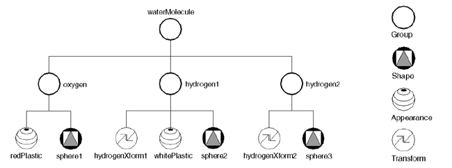

With this tutorial, we want to introduce newcomers to the necessary knowledge to create applications for the Studierstube augmented reality application framework. Simple applications for Studierstube can be scripted in an ASCII-based file format, combining already existing components. For more complex behavior, new components can be added to the framework by implementing them in C++.
Studierstube is built on top of the Open Inventor (OIV) graphics API. Open Inventor is built on top of OpenGL, providing an object-oriented framework for the creation of interactive 3D graphics applications. Studierstube is basically a collection of Open Inventor extensions, providing the neccesary support for creating augmented reality applications. In this tutorial, we mark Studierstube classes with an appended asterisk (*), which is of course not part of the class name.
The great advanage of Open Inventor over low-level APIs like OpenGL is the high level of abstraction provided, supporting the rapid creation of applications and prototypes. While OpenGL deals with low-level graphics primitives like polygons, and provides only the very fundamental data types and structures necessary to send graphics data to the rendering pipeline, Open Inventor provides an object-oriented view on a graphical application: Visual objects, lights, cameras, user interface components and abstract components that control the behavior of an application are all modelled as objects that can be controlled and arranged by the user. The framework can be extended with the well-known techniques from object-oriented programming, namely inheritance and aggregation, to derive even more complex components from already existing building blocks.
The fundamental data structure for every Open Inventor application is the scene graph. Everything that contributes to the look and behavior of an application - geometry, transformations, textures, lights, interaction tools - is added to the scene graph. Open Inventor scene graphs are directed, acyclic graphs with a single root node - you can think about it as a tree that also allows forward-links from a node to child nodes of other parents. A scene graph is composed of nodes, some of which - group nodes - can contain children.

Fig.1.: An example scene graph, used for rendering a water molecule. The right image shows the resulting geometry.
The scene graph is processed, or traversed, for various purposes.
Traversal happens always in depth-first, left-to-right manner, which means that
a node's children are traversed before its next sibling. The graph
shown in Fig. 1 would be traversed in the following order: waterMolecule
- oxygen - redPlastic - sphere1 - hydrogen1
- hydrogenXform1 - whitePlastic - sphere2
- hydrogen2 - hydrogenXform2 - sphere3.
All nodes that are traversed contribute (possibly) to the traversal state
that is accumulated during traversal. For example, geometric transformations
are stored as nodes in the scene graph and will accumulate when traversed. Any
visible object encountered afterwards will be affected by the accumulated transformation.
In the scene graph in Fig. 1, the material set inside the hydrogen1
group by the node whitePlastic affects both sphere2
and sphere3.
The following image shows the structure of a scenegraph where one node (the leg of the robot) is referenced at two different locations. The resulting rendered image is shown to the right.

Most frequently, scene graphs are traversed for rendering them to the display. During rendering traversal, all transformation- and camera nodes that are encountered are accumulated and visible objects are rendered accordingly. Other examples for traversal would be searching, picking objects along a ray, calculating the bounding box of a scene or writing a scene to a file.
As already mentioned, nodes can have different purposes, but most nodes will contribute to the traversal state in one way or the other. Geometry nodes define visible geometry, either as shape primitives like spheres or cylinders, or as arbitrary shaped surfaces made out of polygons or NURBS. Appearance nodes change the appearance of objects, either by adjusting their material properties like opacity, shininess and surface color, or by other means like applying a texture to subsequently rendered surfaces. Other nodes define lights and cameras that influence the rendering of the scene. Group nodes can contain children, and are used for organizing and controlling the traversal of the scene graph.
OIV nodes contain fields, holding one or multiple values of a certain type. The following types are built into the OIV API:
| Type | Description |
|---|---|
| BitMask | Field containing a set of bit flags |
| Bool |
Boolean value (TRUE or FALSE) |
| Box3s | 3D box that has planes parallel to the major axes and is specified by two points on a diagonal. |
| Color |
RGB (red/green/blue) color value |
| Enum | field containing an enumerated value |
| Float | float value |
| Image | field containing an image |
| Image3 | field containing a 3-dimensional image (volume) |
| Int32 | integer value |
| Matrix | 4*4 matrix |
| Name | Character string stored in a special table for fast and easy comparison, typically for identifiers |
| Node | Field that holds a reference to another node |
| Plane | Oriented 3D plane |
| Rotation | Representation of a 3D rotation about an arbitrary axis |
| String | Character string |
| Time | Representation of time in seconds and microseconds |
| Trigger | Trigger field. Contains no value, but any input is used to trigger some action. |
| Vecnf | n-dimensional float vector, used to represent points or directions (Vec2f, Vec3f, Vec4f) |
(Actually, the list of basic types is longer, but these types are available
for scripting) For single value fields, the prefix SF is added
to the type name, multi-value fields start with the MF prefix.
A field holding a single string would therefore have the type SFString,
a field holding multiple vectors MFVec3f.
Note that in C++, all inventor class names have the prefix Sb
(Scene Basic) or So (Scene Object). All objects that can be put
into the scene graph (nodes, fields and other classes) have the So
Prefix - the class name for SFString field is therefore SoSFString.
This is important to know when browsing documentation, which often references
to the C++ class names. In the scripting file format, these prefixes can be
omitted for all built-in Open Inventor types.
Numeric fields don't have any units associated with them - depending on the
application context, a value of 1.0 may indicate a millimeter,
meter, mile or lightyear. In the Studierstube environment, the basic unit is
meters - therefore, a value of 1.0 always indicates a meter.
Since fields of different types can be connected together (as will be explained
below), Open Inventor performs automatic type conversions between fields if
necessary and possible. Most notably, every type can be converted to and from
the String type - this means that all field values can be output
to strings, and all strings connected to fields will be parsed automatically
to generate an appropriately typed value for that field. Also, SF
fields will be converted to MF fields containing a single entry,
and for MF fields connected to SF fields, the first
entry will be used.